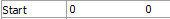
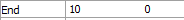
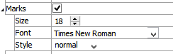

Scanline
Description
A 2D chart of selected joint, zone, or gridpoint values along a line. The data sampling is defined by the start, end and number attributes. The values plotted are taken fom the object nearest the points on the line. There is no averaging or projection to the sampling point location.
Attributes
DataType
Select the type of data that the scanline should display. The options ar shown in the table below.
| Data Type | Description |
|---|---|
| Block | Block or zone values at points along the line |
| Joint Along | Contact values from joint along the specified line |
| Joint Crossing | Contact values from joints crossing the specified line. |
Value

Select which values are to be displayed in the chart. The options are listed in the table below.
| Block (Zone) | Joint Along or Crossing |
|---|---|
| Displacement | Aperture |
| Displacement-X | Contact Extraᵉ |
| Displacement-Y | Flow Rate |
| Sig1 | Flow Velocity |
| Sig2 | Normal Displacement |
| Stress Normal | Normal Stress |
| Stress Shear | Pressure |
| Stress-XX | Shear Displacement |
| Stress-XY | Shear Stress |
| Stress-YY | |
| Velocity | |
| Velocity-X | |
| Velocity-Y |
| Key: |
| ᵉAn “Index” attribute follows |
Start
Specify the starting x y coordinates for the scanline.
End
Specify the end x y coordinates for the scanline.
Number

Specify the number of points along the line to sample.
X-Axis (and Y-Axis)

Specify the scale and labeling of the axis (controls are the same for both \(x\) and \(y\) axes).
X-Axis: This is a container for the following attributes.
Log: Use (checked) a logarithmic scale for the axis.
Minimum: Specify the lowest value appearing on the axis. Check “Auto” to set the value automatically.
Maximum: Specify the highest value appearing on the axis. Check “Auto” to set the value automatically.
Inside: Draw a line (checked) at the origin perpendicular to the axis direction in the chart.
Label: Set the text used to identify the axis on the chart.
Exponent: Display (checked) the exponent with the axis label. This is also a container for the following.
Value: Set the exponent automatically when “Auto” is checked. When unchecked, the value can be set in the edit field (if set to 0, the axis label is removed). Tick mark labels are adjusted accordingly.
Title

Control the titling of the plot item.
Title: Show (checked) the chart title at the top of the chart. Set the chart title by entering text in the “Alias:” field. This attribute also contains the following.
Size: Set the size of text in the title.
Font: Set the font face used for the text.
Style: Set the text style (the options are normal, bold, italic, bold-italic).
Labels

Control the appearance of labels on the chart.
Labels: include (checked) axes labels in the chart.
Size: Set the size of text in the label.
Font: Set the font face used for the label text.
Style: Set the text style (the options are normal, bold, italic, bold-italic).
Marks
Control the appearance of axes tick labels on the chart.
Marks: include (checked) axes tick labels in the chart.
Size: Set the size of text in the tick label.
Font: Set the font face used for the tick label text.
Style: Set the text style (the options are normal, bold, italic, bold-italic).
Chart

Set display options for the chart.
Chart: This is a container.
Border: Include (checked) the chart border.
Line: Set border line width and color.Grid: Include (checked) a chart grid at major tickmarks, and set color, line style, and width of the grid lines.
Position: Specifies the bottom and left positions, respectively, of the item’s bottom-left corner, as a percentage of the available rendering area.
If these values are set such that, with the current size setting, the item would exceed the available rendering area, then the size will be automatically downwardly adjusted to fit.
Size: Specify \(x\) and \(y\) size, respectively, of the item, as a percentage of the available rendering area. Also see the position attribute.
Legend
Set display of the item in the plot legend. All plot items, at minimum, have a Title attribute.
Legend: Show (checked) all information about the plot item in the legend.
Title: Show (checked) the title of the plot item in the legend. The “Alias:” field may be used to specify a custom title for the item.
Size: Set the size of text in the legend.
Font: Set the font face used for the text.
Style: Set the text style (the options are normal, bold, italic, bold-italic).
Color: Set the text color.
Beneath Title, the scanline Chart plot item also provides controls in Legend for Series and Vs. The sub-attributes of each are the same as those for Title.
| Was this helpful? ... | UDEC © 2018, Itasca | Updated: Mar 15, 2024 |